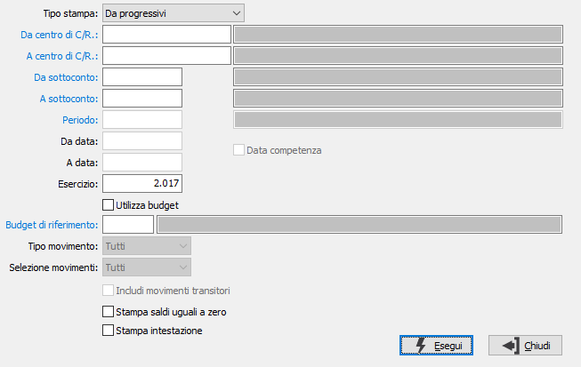

Stampa situazione saldi mensile
Il programma consente la stampa della situazione dei saldi di contabilità analitica ripartiti per mese in base ai progressivi oppure in base ai movimenti.

TIPO STAMPA: definisce il tipo di stampa: da movimenti, da progressivi o da movimenti per esercizio; questa ultima opzione considera l'esercizio e non l'anno solare per elencare i mesi.
DA CENTRO C/R.: eventuale codice del centro di costo/ricavo, presente in anagrafica, da cui si vuole iniziare la selezione di analisi. Confermando a vuoto, la selezione inizia dal primo codice valido. Sul campo sono attive le funzioni di ricerca (F9) ed accesso interattivo alla tabella collegata (CTRL+W).
A CENTRO C/R.: eventuale codice del centro di costo/ricavo, presente in anagrafica, con cui si vuole terminare la selezione di analisi. Confermando a vuoto, la selezione termina con l’ultimo codice valido. Sul campo sono attive le funzioni di ricerca (F9) ed accesso interattivo alla tabella collegata (CTRL+W).
DA SOTTOCONTO: eventuale codice del sottoconto, presente in anagrafica, da cui si desidera iniziare la selezione di analisi. Confermando a vuoto, la selezione inizia con il primo codice valido. Sul campo sono attive le funzioni di ricerca (F9) ed accesso interattivo alla tabella collegata (CTRL+W).
A SOTTOCONTO: eventuale codice del sottoconto, presente in anagrafica, a cui si desidera terminare la selezione di analisi. Confermando a vuoto, la selezione termina con l’ultimo codice valido. Sul campo sono attive le funzioni di ricerca (F9) ed accesso interattivo alla tabella collegata (CTRL+W).
PERIODO: inserire il periodo per cui si desidera effettuare la stampa. L'inserimento del periodo determina la valorizzazione delle date di stampa. Sul campo sono attive le funzioni di ricerca (F9) sulla tabella stessa. Questa opzione è disponibile solo per il tipo stampa da movimenti.
DA DATA: eventuale data del movimento da cui deve iniziare l’analisi dei movimenti relativamente ai precedenti parametri di selezione. Confermando a vuoto, l’analisi inizia con il primo movimento valido. Questa opzione è disponibile solo per il tipo stampa da movimenti.
A DATA: eventuale data del movimento con cui si desidera terminare l’analisi dei movimenti relativamente ai precedenti parametri di selezione. Confermando a vuoto, l’analisi si conclude con l'ultimo movimento valido. Questa opzione è disponibile solo per il tipo stampa da movimenti.
DATA COMPETENZA: definisce se l'elaborazione deve riferirsi alle date dei movimenti oppure alle eventuali date di competenza inserite sulle singole righe dei movimenti. La spunta determina la selezione per competenza. Questa opzione è disponibile solo per il tipo stampa da movimenti.
ESERCIZIO: indicare l'esercizio di stampa. Questa opzione è disponibile solo per il tipo stampa da progressivi.
UTILIZZA BUDGET: determina se stampare il raffronto con il budget inserito nel campo successivo.
BUDGET DI RIFERIMENTO: indica il codice del Budget da utilizzare per determinare i valori di confronto. Sul campo sono attive le funzioni di ricerca (F9) ed accesso interattivo alla tabella collegata (CTRL+W).
TIPO MOVIMENTO: definisce il tipo di movimenti da elaborare. Valori ammessi: Tutti, Effettivi o Previsionali. Questa opzione è disponibile solo per il tipo stampa da movimenti.
SELEZIONE MOVIMENTI: definisce quali movimenti devono essere elaborati. Valori ammessi: Originari; Derivati; Tutti. Questa opzione è disponibile solo per il tipo stampa da movimenti.
INCLUDI MOVIMENTI TRANSITORI: definisce se includere nell'elaborazione i movimenti relativi a centri C/R. transitori; spuntare la casella per includere i movimenti transitori. Questa opzione è disponibile solo per il tipo stampa da movimenti.
STAMPA SALDI UGUALI A ZERO: definisce se effettuare la stampa anche se il saldo dell'elemento in stampa è uguale a zero; spuntare la casella per stampare i saldi a zero.
STAMPA INTESTAZIONE: indica se deve essere stampata come prima pagina del report una pagina contenente tutte le informazioni inerenti i criteri di selezione specificati per il report stesso (casella con segno di spunta).